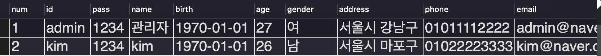

JAVA Servlet 프로젝트) Cafe(웹 사이트) 만들기 3 - 회원가입 기능 만들기
개발환경
- OpenJDK 8
- Eclipse 2021-12
- tomcat 8.5
- MySQL Workbench 8.0.19
시작
- 2022.3.4 ~
주제
- 웹 백엔드 수업 중 중간 과제로 개인 프로젝트를 진행하게 되었다.
- 회원가입/로그인/탈퇴 등 기본적인 회원관리 시스템을 가진 웹 사이트를 만드는 것이다. 주어진 기한은
한 달 - 나는
다음 카페를 소규모로 만들어 보기로 했다. 평소 자주 이용하기도 했고 과제의 평가 기준에서 요구하는 기능들을 다 담고 있기도 했기 때문에 이번 기회에 구현해 보면 그동안 배운 것들을 활용하기에 좋을 거 같았다. - 평가 기준에 사이트의 디자인 구현(HTML/CSS 등 프론트엔드)은 포함되지 않기 때문에 본인이 쓰고 싶은 HTML/CSS 템플릿을 구한 뒤 회원 관리 기능을 구현하면 된다.
진행상황
- 오늘은 저번 시간에 만든
DB 테이블과 내가 만든 사이트를 연동해서 회원가입 기능을 구현했다.
1. xml 파일 만들기
DB연결이 필요한 페이지마다 DB 연결을 위한 코드를 작성하면 비효율적이니까 먼저xml파일에 연결에 필요한 정보를 저장한 후 불러온다.
<?xml version="1.0" encoding="UTF-8"?>
<Context>
<!-- Context : 프로젝트 -->
<Resource
name="디비에 접근하기 위한 이름"
auth="컨테이너 자원 관리자 설정 - Application or Container"
type="리소스를 사용할 때 실제로 사용되는 클래스 타입"
username="디비 아이디"
password="디비 비밀번호"
driverClassName="드라이버 주소"
url="디비 연결 주소"
maxActive="커넥션 회수 대기시간"
/>
</Context>
- 기본 형식과 각 라인의 의미는 위와 같으며
<?xml version="1.0" encoding="UTF-8"?>
<Context>
<Resource
name = "jdbc/cafe"
auth = "container"
type = "javax.sql.DataSource"
driverClassName = "com.mysql.cj.jdbc.Driver"
url = "jdbc:mysql://localhost:3306/cafedb"
username = "root"
password = "1234"
/>
</Context>
- 나는 이렇게 작성했다.
2. DTO, DAO 클래스 만들기
- 회원 가입에 필요한 정보를 모아서 한꺼번에 전달할 수 있는 객체를 만들기 위해
MemberDTO클래스를 만들었다.
import java.sql.Date;
import java.sql.Timestamp;
public class MemberDTO
{
private int num;
private String id;
private String pass;
private String name;
private Date birth;
private int age;
private String gender;
private String address;
private String phone;
private String email;
private Timestamp regdate;
// getter/setter 작성
}
- 그리고
DB연결을 처리할 서블릿 클래스를 만들었다. 커넥션 풀을 사용하도록 구현했다.
import java.sql.Connection;
import java.sql.PreparedStatement;
import java.sql.ResultSet;
import javax.naming.Context;
import javax.naming.InitialContext;
import javax.sql.DataSource;
public class MemberDAO
{
private Connection con = null;
private PreparedStatement pstmt = null;
private ResultSet rs = null;
private String sql = "";
// DB 연결정보 준비
private Connection getCon() throws Exception
{
// Context 객체 생성
Context initCTX = new InitialContext();
DataSource ds = (DataSource) initCTX.lookup("java:comp/env/jdbc/cafe");
con = ds.getConnection();
System.out.println("DAO : 1.2. DB 연결 성공");
System.out.println("DAO : " + con);
return con;
}
// DB 자원해제
public void CloseDB()
{
try
{
if (null != rs) rs.close();
if (null != pstmt) pstmt.close();
if (null != con) con.close();
}
catch (Exception e)
{
e.printStackTrace();
}
}
// insertMember(dto)
public void insertMember(MemberDTO dto)
{
System.out.println("insertMember(dto) 호출");
// 1.2. DB 연결
try
{
con = getCon();
// 3. sql 작성 & pstmt 연결
sql = "insert into cafe_members(id, pass, name, birth, age, gender, address, phone, email, regdate) "
+ "values(?,?,?,?,?,?,?,?,?,?)";
pstmt = con.prepareStatement(sql);
pstmt.setString(1, dto.getId());
pstmt.setString(2, dto.getPass());
pstmt.setString(3, dto.getName());
pstmt.setDate(4, dto.getBirth());
pstmt.setInt(5, dto.getAge());
pstmt.setString(6, dto.getGender());
pstmt.setString(7, dto.getAddress());
pstmt.setString(8, dto.getPhone());
pstmt.setString(9, dto.getEmail());
pstmt.setTimestamp(10, dto.getRegdate());
// 4. sql 실행
pstmt.executeUpdate();
System.out.println("DAO : 회원가입 완료");
}
catch (Exception e)
{
e.printStackTrace();
}
finally
{
CloseDB();
}
System.out.println("DAO : insertMember(dto) 끝!");
}
// insertMember(dto)
}
3. 회원가입 처리 동작을 수행할 Action 클래스 만들기
jsp페이지에서 회원가입 처리를 수행하지 않고 자바 클래스에서 처리할 것이다.Action페이지에서 구현해야 하는 기능을 빼먹지 않고 강제하기 위해서 인터페이스를implements한 뒤 오버라이딩하여 구현했다.
import javax.servlet.http.HttpServletRequest;
import javax.servlet.http.HttpServletResponse;
public interface Action
{
public ActionForward execute(HttpServletRequest request, HttpServletResponse response) throws Exception;
}
import java.sql.Date;
import java.sql.Timestamp;
import javax.servlet.http.HttpServletRequest;
import javax.servlet.http.HttpServletResponse;
import com.project.cafe.member.db.MemberDAO;
import com.project.cafe.member.db.MemberDTO;
// 회원가입 처리동작 수행
// model 객체로 pro 페이지 역할을 한다.
public class MemberJoinAction implements Action
{
@Override
public ActionForward execute(HttpServletRequest request, HttpServletResponse response) throws Exception
{
System.out.println("M : MemberJoinAction - execute() 호출");
// 한글처리
request.setCharacterEncoding("UTF-8");
// 전달받은 파라미터 저장 (JSP 페이지가 아니므로 액션태그는 쓸 수 없고 setter를 이용해 저장한다)
MemberDTO dto = new MemberDTO();
dto.setId(request.getParameter("id"));
dto.setPass(request.getParameter("pass"));
dto.setName(request.getParameter("name"));
dto.setAddress(request.getParameter("address"));
dto.setAge(Integer.parseInt(request.getParameter("age")));
dto.setBirth(Date.valueOf(request.getParameter("birth")));
dto.setEmail(request.getParameter("email"));
dto.setGender(request.getParameter("gender"));
// 폰번호 3개 필드 합친 후 저장
StringBuilder sb = new StringBuilder();
sb.append(request.getParameter("phone1"));
sb.append(request.getParameter("phone2"));
sb.append(request.getParameter("phone3"));
dto.setPhone(sb.toString());
// 날짜 정보 추가 저장
dto.setRegdate(new Timestamp(System.currentTimeMillis()));
System.out.println("M : 전달된 회원 정보 저장");
System.out.println("M : " + dto);
// DAO 객체 생성
MemberDAO dao = new MemberDAO();
// 회원가입 메서드 호출
dao.insertMember(dto);
System.out.println("M : 회원가입 완료");
// 페이지 이동 (로그인 페이지로 - ./login.me)
ActionForward forward = new ActionForward();
forward.setPath("./login.me");
forward.setRedirect(true); // Action 페이지를 노출하지 않고 가상 주소를 보여줘야 하니까 true로 설정해서 주소줄에 표시되는 주소를 바꾼다.
return forward;
}
}
DB 테이블에서 회원의 생년월일 정보를DATE타입으로 설정했기 때문에 이 단계에서 생년월일은 어떻게 세팅해서 넣어줘야 하는지 몰라서 좀 헤멨다. 그 동안Timestamp만 쓰고Date를 쓰는 것이 처음이었기 때문에…😅- 처음엔
YYYY-DD-MM형태로 입력되는 데이터에서 ‘-‘을 빼고 숫자만 있는 형태로new Date객체를 생성해서 넣어보기도 하는 등 헤메다가 구글링 후Date.valueOf("YYYY-DD-MM")형태로 넣어주면 된다는 것을 알게 되어서request객체의getParameter()를 그대로 넣었다. jsp페이지의<input>태그의date타입으로 입력받기 때문에 전달되는 데이터의 형태가YYYY-DD-MM였다.
4. 회원가입 페이지에서 MemberJoinAction 클래스 연결
join.jsp페이지에서 폼태그의action부분을 수정한다.
<h3>회원가입</h3>
<form id="join" action="./MemberJoinAction.me" method="post">
<div class="formRow">
<label for="MOD_TEXTFORM_NameField">아이디 </label><input id="MOD_TEXTFORM_NameField" type="text" name="id">
</div>
<div class="formRow">
<label for="MOD_TEXTFORM_NameField">비밀번호 </label><input id="MOD_TEXTFORM_NameField" type="password" name="pass">
</div>
...
5. Controller에서 Action 클래스 연결하기
MemberFrontController클래스의doProcess()함수의 가상주소 매핑 부분을 수정한다.
protected void doProcess(HttpServletRequest req, HttpServletResponse resp) throws ServletException, IOException
{
// 1. 전달되는 가상주소 계산
...
// 2. 가상주소 매핑
Action action = null;
ActionForward forward = null;
if (command.equals("/main.me") || command.equals("/join.me") || command.equals("/login.me"))
{
forward = new ActionForward();
if (command.equals("/main.me"))
{
System.out.println("C : 메인페이지 호출");
forward.setPath("./main/main.jsp");
}
else if (command.equals("/join.me"))
{
System.out.println("C : 회원가입 페이지 호출");
forward.setPath("./member/join.jsp");
}
else if (command.equals("/login.me"))
{
System.out.println("C : 로그인 페이지 호출");
forward.setPath("./member/login.jsp");
}
forward.setRedirect(false);
}
else if (command.equals("/MemberJoinAction.me"))
{
System.out.println("C : /MemberJoinAction.me 호출");
System.out.println("C : 이전 페이지 정보를 가져와서 DB 테이블에 저장 후 페이지 이동");
action = new MemberJoinAction(); // 인터페이스를 통해 객체를 생성함으로써 약한결합이 되도록 한다.
try
{
forward = action.execute(req, resp);
}
catch (Exception e)
{
e.printStackTrace();
}
}
System.out.println("C : 가상주소 매핑 완료\n");
// 2. 가상주소 매핑
// 3. 페이지 이동
...
}
6. 동작 테스트 결과!

- 잘 들어간다!
- 그리고 회원가입이 완료되면 로그인 페이지로 이동하는 것까지 잘 구현되었다.
뿌듯-!😄
마감까지
D-28